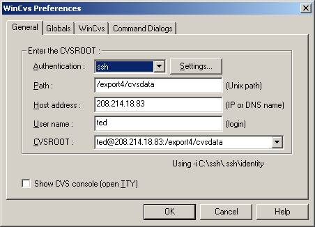
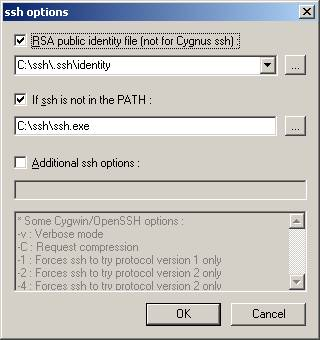
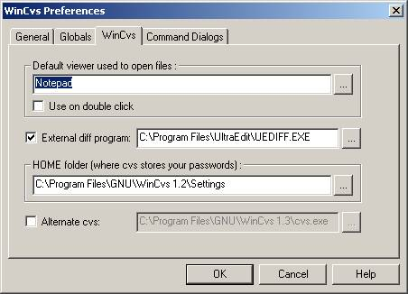
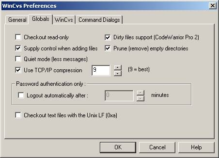

$Revision: 1.1 $
$Date: 2002/02/22 19:49:08 $
Prepared by Ted Skolnick, 11/13/2001
Adapted for the CLRA project by Rick Hall, 2/22/2002
(Note on the adaptation: this document was originally written by Ted Skolnick for another project, one on which developers were less familiar with version control. This adaptation has removed the more introductory sections, and has kept the sections that describe how to use CVS in a Windows environment. All the good stuff is Ted's.)
Almost every good software practice is a time saving measure. Version control is no exception; it saves time by preventing mishaps, and by allowing for rapid recovery when there are problems.
Version control helps to:
Versions: Store checkpoints of files during development (i.e. save your work). Checkpoints provide a safety net for rolling back to a previous version when needed. Inspecting and comparing versions throughout a file's history can help determine when a bug was introduced.
Prevent Overwrites: When we have multiple developers on a project it is important to make sure we don't overwrite each other's files. CVS was designed to solve this problem.
Accountability and tracking: If each developer is checking in their own work, they can see which changes were theirs, and which ones were by another team member.
When using CVS there are a few guidelines to follow:
Comments: When you check in a file, comment the changes you made.
Check in frequently: In order to minimize situations where multiple people are working on the same file (i.e. avoid file merges), try to check in any file you have checked out, by the end of the day. There will be some exceptions here, but in general this is good practice, partly because it ensures that you save your work.
Don't check in broken stuff: Code does not need to be in perfect working order to check it in, but it can't be in a state that would prevent other developers from running their code if they fetched your file. For java development, the rule should be that all code must compile before you check it in.
Diffs: Use the diff comparison tool to make sure that the changes you are checking in are correct and what you expect. Always do a diff before signing a file in.
I will just provide a few general words here. A nice concise overview of using winCVS can be found at:
http://www.computas.com/pub/wincvs-howto/
Many systems prevent clobbering by locking files. When a user wants to edit a file, they lock it, so nobody can edit it until they are done, at which point they release the lock. CVS however, does not, by default, use file locking. Instead it compares your local file to the file in the archive and warns you if somebody else has made changes since you last fetched the file. You will not be able to check in your file until you resolve the differences. I am personally much more familiar with locking mechanisms, but both techniques seem to solve the problem, and WinCVS has worked just fine in my local tests.
CVS uses a simple client server architecture. When you run the winCVS client, it will connect to the winCVS server running on SourceForge. This connection is made via SSH. As a result, you will need to install SSH on your machine. Setup is discussed below.
There are two pieces of software you will need to install. The first in winCVS and the second is SSH. WincCVS is a GUI front end for CVS. SSH is used to communicate to the CVS server on SourceForge.
WinCvs is available from the WinCVS website.
Download wincvs136.zip or a later version.
(Credit: much of the following was taken from http://www.wincvs.org/ssh.html)
Make a few environment changes.
SSH needs two
environment variables to work properly: HOME and PATH
The first (HOME) will set an environment variable for ssh to find your encrypted identity key. The second (PATH) needs to be updated to include
ssh.
For Windows 2000, open Start->Control Panel->System->Environment
Add a variable HOME with the value C:\SSH.
Next, find the PATH variable. Add to it your SSH installation directory, e.g. C:\SSH
(directories are separated by ';' ).
Start an MS-DOS shell, and try to connect using ssh.
"username" must be a valid UN*X shell account on
"clra.sourceforge.net"
ssh -l username cvs-server-host
You should be prompted for the username's password for clra.sourceforge.net.
If not, your setup is wrong. Go back. Fix it.
Note the "cvs." that is prepended to "clra.sourceforge.net". By trying to log into this account, you'll trigger the UNIX host to create an account for you on the CVS server. You won't be able to directly use this account (for example, you won't be able to SSH to it), but CVS needs this account for housekeeping purposes. If this account is not set up, you'll receive cryptic error messages about ".Xauthority" when you try to use CVS.
If the login succeeds, you will be logged out immediately and automatically.
If you want to enter a password every time you do any CVS action, skip this step. Trust me, you don't want to skip it.
Make a directory called ".ssh" (DOTssh that is) in the directory you specified as HOME. Enter an MS-DOS prompt and type the following:
mkdir C:\SSH\.SSH cd C:\SSH
ssh-keygen -C <comment> -f ./.ssh/identity
<comment> is an identifier placed in the public key (use your email
address).
Now you need to set up the server to accept your keys. SourceForge has a web-based interface for doing this. Log into your SourceForge account. Click on "Account Maintenance" in the left-hand margin. Choose "Account preferences" from the maintenance menu. Scroll down to the "Shell account information". Click on "Edit Keys". You'll be presented with a form that will upload your "identity.pub" key to SourceForge.
Go back and try the previous step again; now it should log you in with no password. If it asks for a password, try adding '-v' before the '-l' and read the logs it prints.
NOTE: Without the -C option the program will fail and you won't get a new key pair.
See WinCVS settings section below.
Use the change location button on the tool bar to navigate to your local working directory. Once there, chose, check out module, and pick a module you know from the CLRA archives (e.g. clra/clra-java/doc ).
There are a number of settings in winCVS that will make the system much friendlier to use.

For the CLRA project:
If you then press the Settingsbutton, you will see the following dialog where you type in the location of your public key and the SSH program.


